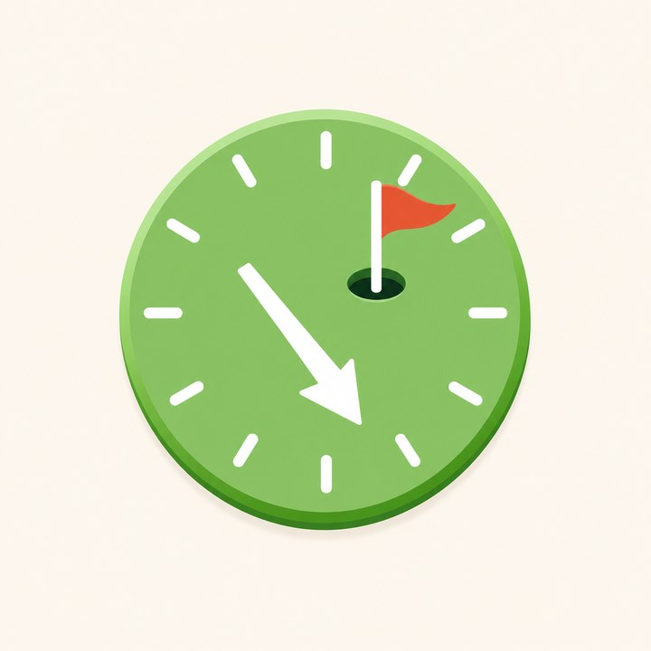

iPhone・Android のグリーンの読みの練習
先に読んで、
置いて答え合わせ。
練習グリーンで、まず自分で下る向き（時計の何時）と傾斜（%）を読みます。端末をカップの方へ向けて置くと、測った値と読みを同じ文字盤に重ねて、ずれを出します。読みのずれが記録されるので、上達が分かります。
App Store・Google Play で配信予定ラウンド中には使えません（ゴルフ規則 4.3a(1)）。練習グリーン・パターマット・ラウンドの前後の練習のための道具です。買い切りで全部の機能が使え、通信もしません。アプリ内課金・サブスクリプション・広告はありません。

こんな困りごとのために
通信が要って使えない
通信しません。電波の無い練習場でも動きます。
端末が平らにならない
180 度回して2回測ると、カメラの出っ張りなどのゆがみが消えます。
シャッターの音で迷惑
音は鳴らしません。カメラも使いません。
測るだけでは上手くならない
先に読んでから測るので、読みのずれが分かり、推移で上達が見えます。
できること
| 読む | 下る向きを時計の文字盤で・傾斜を 0.5% きざみで |
|---|---|
| 測る | 動かなくなってから決める・180 度回して2回でゆがみを消す・傾斜は小数第1位の % |
| 記録 | 向きと傾斜のずれの推移・練習ごとの一覧・CSV |
| しないこと | 芝目の判定・狙う線・ラウンド中の利用 |
使い方・プライバシーポリシー・利用規約もご覧ください。